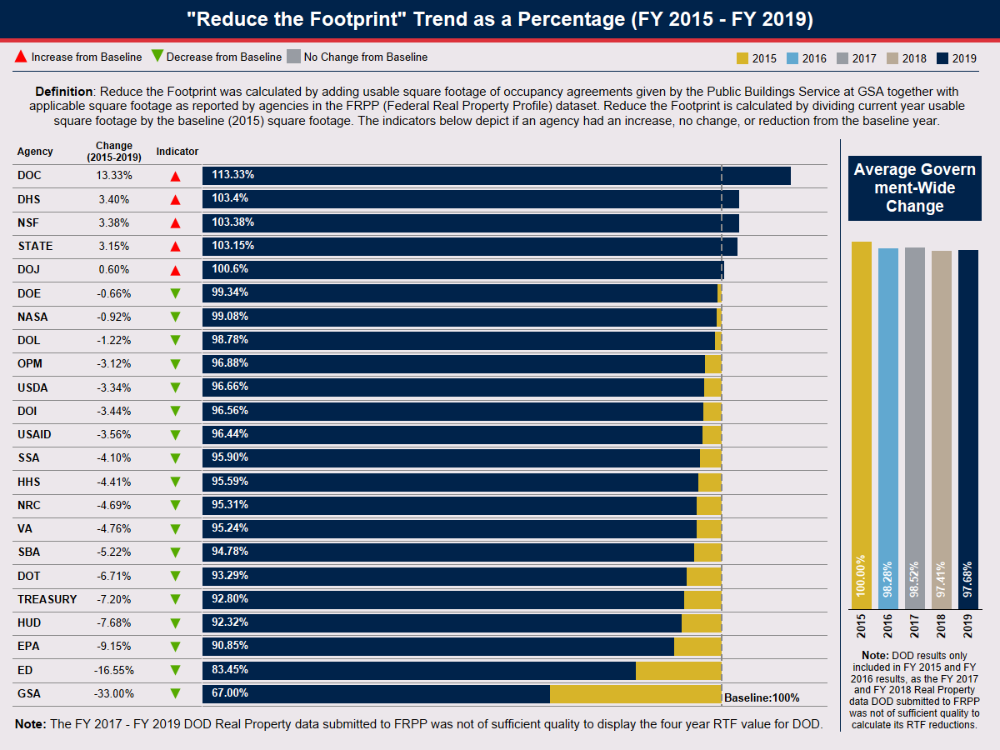

OMB Memorandum No. 2015-01 issued the RTF policy. The Reduce the Footprint policy required the Chief Financial Officers (CFO) Act agencies to submit annual Real Property Efficiency Plans (Plan) to OMB that: (1) set annual square foot (SF) reduction targets for federal domestic buildings over a rolling five-year period; (2) adopt an office space design standard to optimize federal domestic office space usage; and, (3) maintain agencies’ office and warehouse portfolios below their fiscal year (FY) 2015 RTF baselines. Under the RTF policy, OMB has established government-wide policy to use property as efficiently as possible and to reduce agency portfolios through annual reduction targets.
With the issuance of OMB Memorandum M-20-03 Implementation of Agency-wide Real Property Capital Planning, the CFO Act agencies are no longer required to submit annual Plans to OMB. Agencies are still required to set the office, warehouse, and owned property annual reduction targets, but these targets are incorporated into the agency capital plans supported by a brief narrative.
In FY 2019 civilian agencies reduced their office and warehouse space by 566,000 SF resulting in an estimated annual cost increase of $7 million. The small reduction in SF was not enough to offset scheduled increases in leases rates (i.e. annual inflation) resulting in a net cost increase relative to cost in FY 2018. Note that these figures exclude the short-term space the US Census Bureau acquired to execute the 2020 census.
The FY 2019 results brings the FY 2016 – FY 2019 results for the RTF policy to a 16.9 million SF reduction to office and warehouse space with an estimated annual cost avoidance of $129 million.
 Agency FY20 to FY24 RTF Reduction Targets and Results Data Government-wide Performance Metrics Dashboard